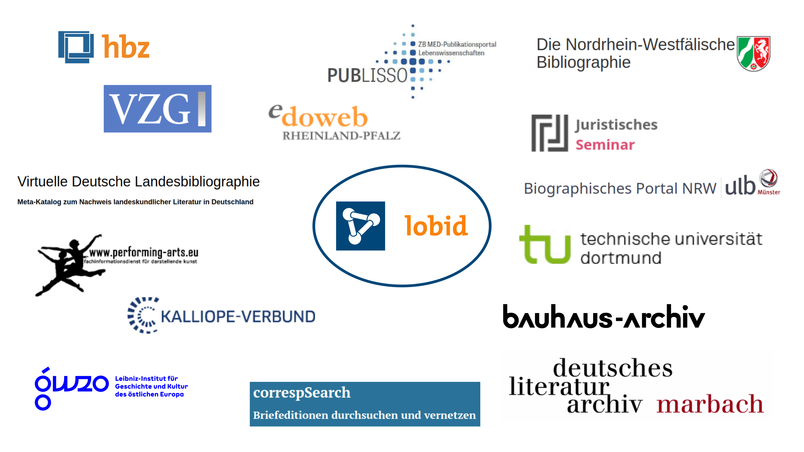
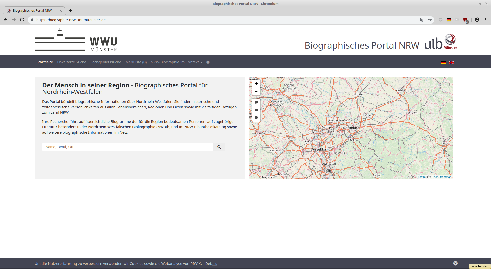
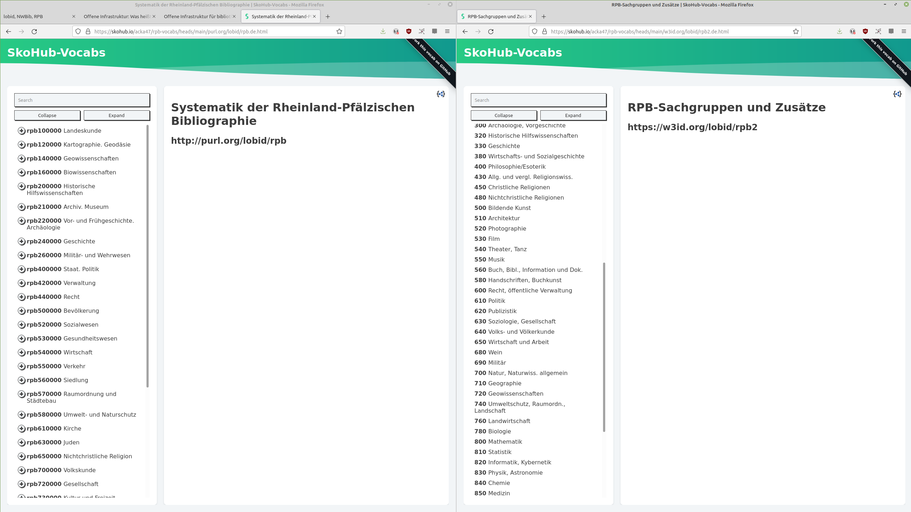

lobid, NWBib, RPB
Adrian Pohl /
@acka47
Offene Infrastruktur, Hochschulbibliothekszentrum NRW (hbz)

WWW, 2021-11-05
Diese Präsentation:
http://slides.lobid.org/2021-11-05-rpb/

Offene Infrastruktur
Drei Säulen der OI-Arbeit:
Nutzung, Pflege und Unterstützung offener Infrastruktur
Forschung und Entwicklung
Wissens- und Technologietransfer
Das Team
Adrian Pohl: Gruppenleitung Web-Bibliothekar
Fabian Steeg: Softwareentwicklung
Katinka Tauber: Softwareentwicklung
Pascal Christoph: Softwareentwicklung, Administration
Tobias Bülte: Web-Bibliothekar
+ vier neue Stellen Anfang 2022

lobid steht für Linking Open Bibliographic Data
Seit fast zehn Jahren die zentrale Komponente der offenen Infrastruktur im hbz
Stellt intuitive, web-basierte Rechercheoberflächen und Schnittstellen bereit
lobid-Dienste
lobid-resources: Daten des hbz-Verbundkatalogs
lobid-organisations: Daten des deutschsprachigen Sigelverzeichnisses und DBS-Stammdaten
lobid-gnd: Gemeinsame Normdatei
lobid – ein zentraler Knoten bibliothekarischer Dateninfrastruktur
Datenquellen und -formate

Schauen wir uns das doch mal genauer an
lobid-resources
a. Die Oberfläche

b. Die Daten


Datenherkunft & -generierung
Tägl. Bezug der XML-Daten über den Aleph-Publishing-Mechanismus
Konversion nach N-Triples mittels mit Metafacture (Morph)
Dabei finden verschiedene Normalisierungsarbeiten statt
Labels für verlinkte Ressourcen ergänzen
Et voilà: Linked Open Usable Data (LOUD) -> siehe Rob Sanderson's Europeanatech 2018 Keynote (Slides, Aufzeichnung)
Verbesserung der Daten: Beispiele
MARC-Relator-Codes werden aus RAK-Nebeneintragungen generiert (Morph für Personennebeneintragungen)
Normalisierung von Jahresangaben
Mapping von Informationen aus 050, 057, 058, 334, 652a, 9--, 400/403 etc. auf eine Liste von Publikations- und Medientypen (Morph)
c. Web-API

Abfrage-Möglichkeiten
JSON-LD-Daten in Elasticsearch-Index
Elasticsearch bzw. Lucene Suchsyntax
Abfrage nach gelöschten Titeln (ab 2018-04-04)
Beispiel-Abfragen
Ermitteln eines hbz-Titels anhand der OCLC-Nummer
oclcNumber:601339369
RDA-Titel seit 2010
title:rda AND
publication.startDate:[2010 TO *]
Online-Medien mit Bestand
medium.id:
"http://rdaregistry.info/termList/ RDACarrierType/1018"
AND _exists_:hasItem
ZDB-Titel, die mit einer NWBib-Systematik erschlossen sind aber nicht der NWBib zugerechnet werden und von der ULB Bonn erstellt wurden
subject.source.id:
("http://purl.org/lobid/nwbib" OR
"http://purl.org/lobid/nwbib-spatial")
AND inCollection.id:
"http://lobid.org/resources/HT014846970#!"
AND NOT inCollection.id:
"http://lobid.org/resources/HT014176012#!"
AND describedBy.sourceOrganization.id:
"http://lobid.org/organisations/DE-5#!"
Deletions Endpoint: Vom bis 14. bis 23.2. gelöschte Titel
describedBy.deleted:[20190214 TO 2019023]
lobid-gnd & lobid-organisations
Unterschiede zu lobid-resources-API
Normdaten statt Titeldaten
Ausgangsdaten: bei lobid-gnd RDF/XML, bei lobid-organisations Pica-Plus-XML und CSV
Bereitstellung einer OpenRefine Reconciliation API, siehe z.B. http://lobid.org/gnd/api#openrefine
Anwendungs-
beispiele
Kalliope

Anzeige von externen Links (z.B. Wikipedia) aus lobid-gnd auf Personenseiten
Biographisches Portal NRW
Literaturlisten auf Basis von und Links zu lobid-resources
Bibliothekskatalog des Juristischen Seminars der ULB Bonn

Bulk Download der Daten mit Bestand in DE-5-34
Discovery-Index der UB Dortmund

Titeldaten zu den Beständen der UB & einiger umliegender Bibliotheken werden täglich von lobid geholt, transformiert und in den Index geladen
Verbundbibliotheken auf hbz-Website

Basiert auf lobid-organisations
Edoweb und Fachrepositorium Lebenswisschenschaften (FRL)
https://www.edoweb-rlp.de/ & https://repository.publisso.de/
Nutzt lobid-resources Daten
Im FRL-Erfassungsformular Nutzung des GND-ID-Lookups von lobid-gnd
NWBib
NWBib
Webanwendung, die fast vollständig auf der lobid-API basiert
Nutzt das NWBib-Subset von lobid-resources
Informationen zu besitzenden Bibliotheken von lobid-organisations
Themenvorschläge auf Basis von lobid-gnd
NWBib-Suchergebnisliste

Anfrage gegen das NWBib-Subset in lobid-resources

Informationen zu besitzenden Bibliotheken (Name, URL, Standort) werden aus lobid-organisations geladen

Suche in den Verweisungsformen der GND und Anzeige von bis zu drei Vorschlägen, die am meisten Treffer in der NWBib bringen
Virtuelle Deutsche Landesbibliographie

Seit April 2018 ist nwbib.de in die VDL integriert.
RPB
Worauf wir aufbauen
lobid-Datenmodell
NWBib-Webanwendung
Metafacture als mächtiges Werkzeug für die Datentransformation
RPB-SKOS-Vokabulare & SkoHub Vocabs
RPB-Vokabulare in SkoHub Vocabs
 Demo-Versionen: rpb, rpb2
Weiterführende Informationen
- lobid-Blog, Präsentationsfolien, lobid auf Twitter und Mastodon
- Pohl, Adrian / Steeg, Fabian / Christoph, Pascal (2018): lobid – Dateninfrastruktur für Bibliotheken. In: Informationspraxis 4(1). https://doi.org/10.11588/ip.2018.1.52445
- Steeg, Fabian / Pohl, Adrian / Christoph, Pascal (2019): lobid-gnd – Eine Schnittstelle zur Gemeinsamen Normdatei für Mensch und Maschine. In: Informationspraxis 5(1). https://doi.org/10.11588/ip.2019.1.52673
- Pohl, Adrian / Steeg, Fabian () Zurück ins Web. Die Entwicklung eines neuen Webauftritts für die Nordrhein-Westfälische Bibliographie (NWBib). In: LIBREAS. Library Ideas, 29 (2016). https://libreas.eu/ausgabe29/04pohl/